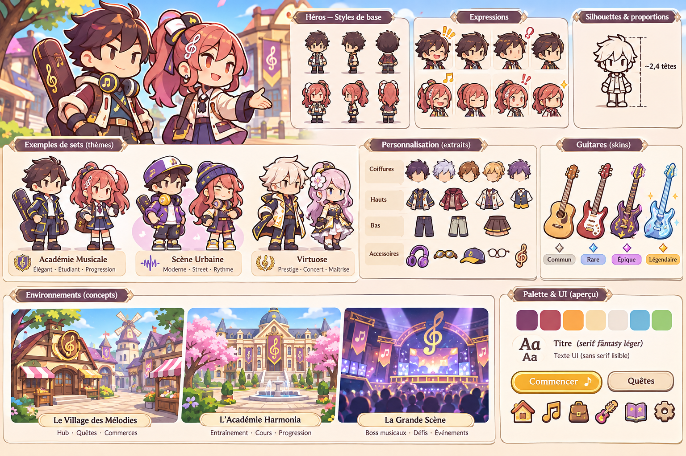
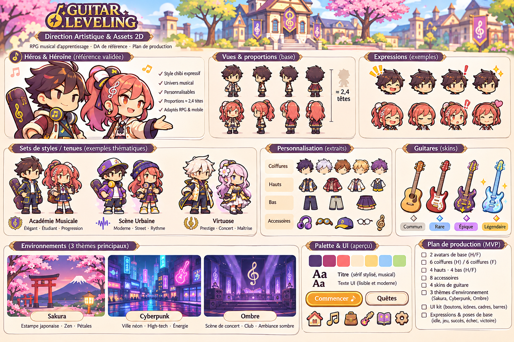
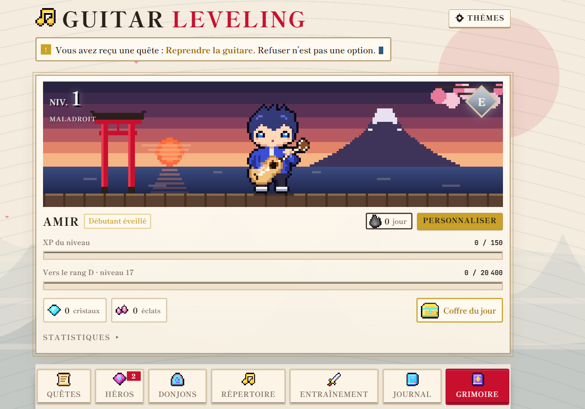
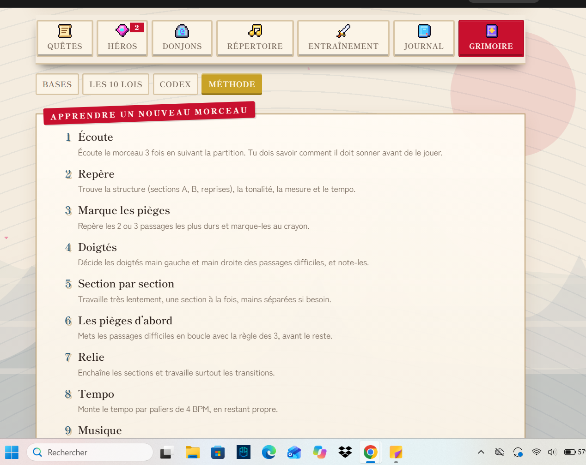
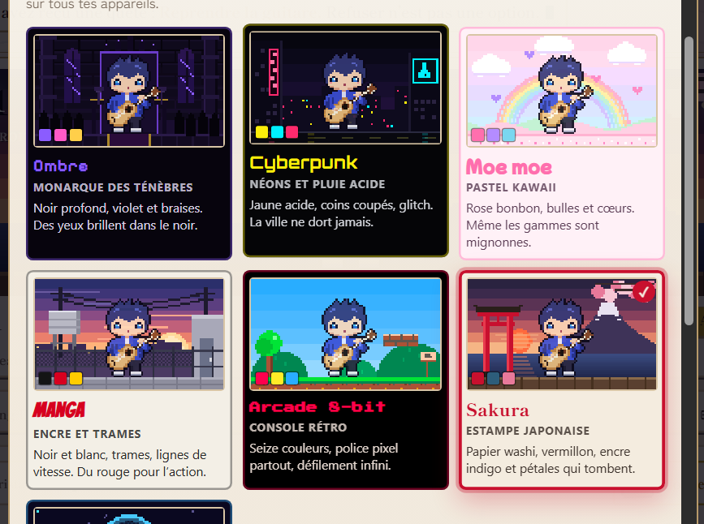

Guitar Leveling — Références approuvées
Attention : les deux premières images sont les références de DA, pas des sprites multicouches. Les images suivantes documentent uniquement l'interface de l'artefact existant.
01 — Personnages verrouillés

02 — Univers et thématiques

03 — Artefact Claude existant (à préserver)


